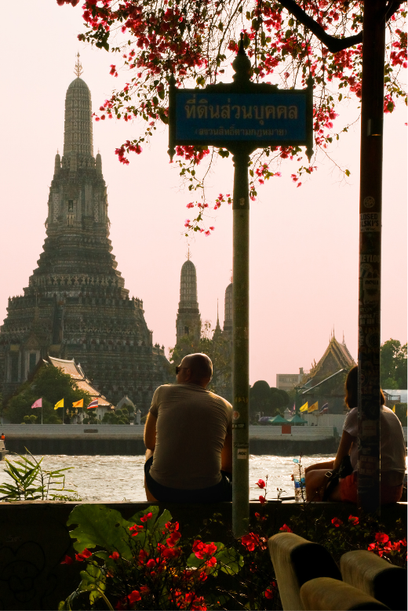
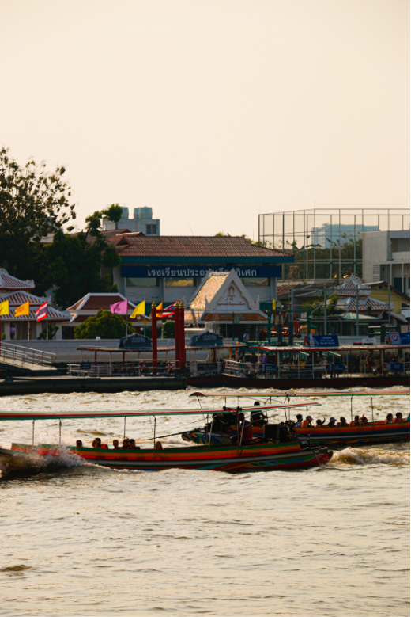
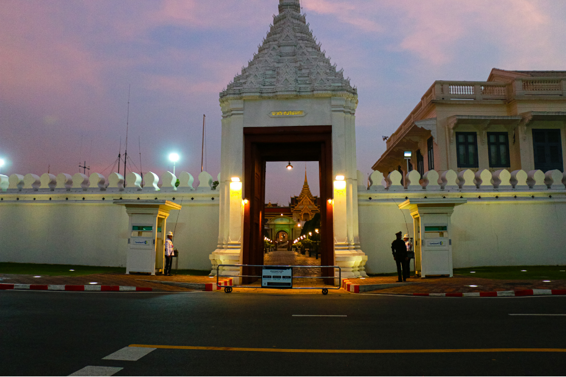
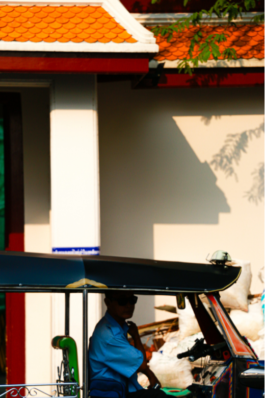

Wat Arun
BTS
MRT
BUS
วัดอรุณราชวราราม หรือวัดแจ้ง ตั้งอยู่ริมแม่น้ำเจ้าพระยา ฝั่งธนบุรี เป็นวัดที่มีพระปรางค์สูงเด่นเป็นเอกลักษณ์ ประดับด้วยกระเบื้องและเปลือกหอยหลากสี
วิธีเดินทาง: นั่ง MRT ลงสถานีอิสรภาพ แล้วต่อเรือข้ามฟาก หรือนั่งเรือด่วนเจ้าพระยาลงท่าเรือท่าตี๊ก เปิดทุกวัน 08:00 - 18:00 น.
ที่อยู่: 1415 ถนนเจริญกรุง แขวงสีลม เขตบางรัก กรุงเทพมหานคร